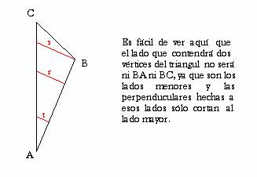
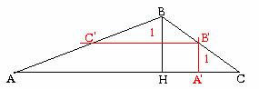

Problema 75
| Dado un triángulo de lados 7 cm, 5 cm, y 3 cm, inscribir un cuadrado. |
Para que un rectángulo esté inscrito en un triángulo, uno de los lados del triángulo tendrá que contener a dos vértices del rectángulo, y los otros dos lados del triángulo, contendrán cada uno otro vértice del rectángulo.


¿Cómo hallaríamos ahora dónde está el cuadrado que nos piden?
Para saber en que punto del lado b hemos de levantar la perpendicular A1B1 o a qué distancia de AC hemos de trazar la paralela C1B1, sabemos solamente que C1B1= A1B1.
Como C1B1 y AC son paralelas, y BH y A1B1 también, vemos que por el Teorema de Tales
y a esa distancia de AC habrá que trazar una paralela, que en su intersección con AB y BC dará dos puntos del cuadrado. Levantando perpendiculares desde AC hasta esos dos puntos, conseguimos los otros puntos del cuadrado.